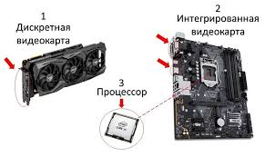

|

1 Интегрированная видеокарта. Представляет собой чип, который встроен или в материнскую плату, или в процессор. Преимуществ у таких устройств немало. Во-первых, это маленькая стоимость. Во-вторых, они обладают низким энергопотреблением. Поэтому чаще всего интегрированная видеокарта используется в ноутбуках, нетбуках, планшетах. С такой видеокартой эти девайсы работают в автономном режиме намного дольше. Но есть и недостатки. К ним можно отнести отсутствие системы охлаждения и, как следствие, низкую производительность. Кроме того, они не обладают собственной памятью. Для работы они заимствуют часть оперативной памяти компьютера (ноутбука). Использование интегрированной видеокарты для более сложных программ для 3D моделирования и современных игр не рекомендуется. Если же компьютер приобретается для того, чтобы играть на нем в современные игры со сложной графикой или для работы, которая связана с применением графических или видео редакторов, то есть смысл заплатить дороже за дискретную видеокарту, но получить надежное, мощное устройство ПК.
2 Любая дискретная видеокарта имеет свою память + может добирать при необходимости из оперативной.Если кратко, то интегрированная намного медленнее, дешевле, у нее меньше энергопотребление, а дискретная — наоборот, гораздо быстрее, дороже, ноутбук с ней сильнее греется и с большим аппетитом кушает аккумулятор.
Для дискретной видеокарты отводится отдельный чип на материнской плате ноутбука, то есть видеокарта не интегрирована с чипом системной логики. Например, видеокарты NVIDIA GeForce8400M G, GeForce 8400M GS и GeForce8400M GT предназначены для ноутбуков и являются дискретными. Аналитики компании ISuppli, исследующие рынок комплектующих, считают, что микропроцессоры со встроенным графическим ядром и далее продолжат вытеснять GPU в сегменте комплектующих для ноутбуков. Тенденция на лицо, а её движущей силой, очевидно, является тот факт, что большинство современных недорогих процессоров уже снабжены графическим ядром.В целом микропроцессоры архитектурой APU в 2014 году будут использованы более чем в 80% ноутбуков, по сравнению с 39% долей, которую они имеют сейчас. Данный рост популярности микропроцессоров со встроенным графическим ядром негативно скажется на динамике рынка дискретных графических устройств для персональных компьютеров.
Дискретная карта не обязательно может быть извлечена из устройства (например, на ноутбуках дискретная карта часто распаяна на материнской плате). Она называется дискретной из-за того, что выполнена в виде отдельного чипа (или набора микросхем) и не является частью других компонентов компьютера (в отличие от графических решений, встраиваемых в чипы системной логики материнских плат или непосредственно в центральный процессор). Большинство дискретных видеокарт обладает своей собственной оперативной памятью (VRAM), которая часто может обладать более высокой скоростью доступа или более скоростной шиной доступа, чем обычная оперативная память компьютера. Хотя ранее встречались видеокарты, которые полностью или частично использовали основную оперативную память для хранения и обработки графической информации, в настоящее время почти все современные видеокарты используют собственную видеопамять. Также иногда (но достаточно редко) встречаются видеокарты, оперативная память которых не установлена в виде отдельных микросхем памяти, а входит в состав графического чипа (в виде отдельных кристаллов или же на одном кристалле с графическим процессором).
|